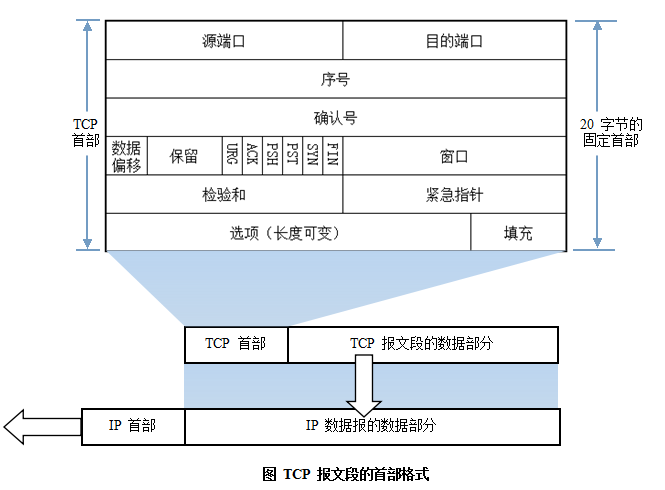

- 1. 网络层次划分
- 2. OSI七层网络模型
- 3. IP地址
- 4. 子网掩码及网络划分
- 5. ARP/RARP协议
- 6. 路由选择协议
- 7. TCP/IP协议
- 8. UDP协议
- 9. DNS协议
- 10. NAT协议
- 11. DHCP协议
- 12. HTTP协议
- 13. 一个举例
コンピュータネットワーク学習の核心内容は、ネットワークプロトコルの学習である。ネットワークプロトコルとは、コンピュータネットワークにおいてデータ交換を行うために確立された規則・標準、あるいは取り決めの集合である。異なるユーザーのデータ端末が採用する文字セットは異なる可能性があるため、両者が通信を行うには、一定の標準に基づく必要がある。分かりやすい例えとして、私たちの言語がある。我が国は広大で人口も多く、地域言語も非常に豊富であり、方言間の差も大きい。A地域の方言はB地域の人には全く理解できないかもしれない。そこで全国の人々が意思疎通できるように、言語の標準を確立する必要がある。これが普通话（標準中国語）の役割である。同様に、世界を見渡せば、外国人とコミュニケーションをとる標準言語は英語であり、だからこそ私たちは苦労して英語を学ぶのである。
コンピュータネットワークプロトコルも私たちの言語と同じように多種多様である。ARPA社は1977年から1979年にかけて、ARPANETというネットワークプロトコルを発表し、広く支持された。その最も主要な理由は、誰もが知るTCP/IP標準ネットワークプロトコルを生み出したことである。現在、TCP/IPプロトコルはインターネットにおける「共通言語」となっている。下図は、異なるコンピュータ群がTCP/IPを用いて通信を行う様子を示したものである。
1. ネットワーク階層の区分
異なるコンピュータメーカーが製造したコンピュータ同士が相互に通信でき、より広範囲にコンピュータネットワークを構築できるようにするため、国際標準化機構（ISO）は1978年に「開放型システム間相互接続参照モデル」、すなわち有名なOSI/RMモデル（Open System Interconnection/Reference Model）を提唱した。これはコンピュータネットワークアーキテクチャの通信プロトコルを七つの層に分割し、下から上に向かって順に、物理層（Physics Layer）、データリンク層（Data Link Layer）、ネットワーク層（Network Layer）、トランスポート層（Transport Layer）、セッション層（Session Layer）、プレゼンテーション層（Presentation Layer）、アプリケーション層（Application Layer）とする。このうち第4層がデータ転送サービスを完了し、上の3層はユーザー向けである。
標準のOSI七層モデル以外に、よく見られるネットワーク階層区分として、TCP/IP四層プロトコルとTCP/IP五層プロトコルがある。それらの対応関係は下図のとおりである。

2. OSI七層ネットワークモデル
TCP/IPプロトコルは間違いなくインターネットの基盤プロトコルであり、これがなければそもそもネットに接続することはできず、インターネットに関わるいかなる操作もTCP/IPプロトコルから切り離せない。OSI七層モデルであれ、TCP/IPの四層・五層モデルであれ、各層にはそれぞれ専用のプロトコルがあり、自身の対応する作業を完了するとともに、上下の層との間で通信を行う。OSI七層モデルはネットワークの標準的な階層区分であるため、ここではOSI七層モデルを例にとり、下から上へ一つずつ紹介する。

1）物理层（Physical Layer）
通信端点間の機械的特性、電気的特性、機能特性およびプロセス特性をアクティブ化、維持、クローズする。この層は、上位プロトコルに対してデータを伝送する信頼性の高い物理メディアを提供する。簡単に言えば、物理層は、生のデータが様々な物理メディア上で伝送できることを保証する。物理層で覚えておくべき重要な機器の名称は、リピーター（Repeater、アンプとも呼ばれる）とハブである。
2）データリンク層（Data Link Layer）
データリンク層は、物理層が提供するサービスの上でネットワーク層にサービスを提供する。その最も基本的なサービスは、ネットワーク層から来たデータを、隣接ノードの目標機のネットワーク層へ確実に伝送することである。この目的を達成するために、データリンクは一連の対応する機能を備えていなければならない。主に、データをどのように組み合わせてデータブロックにするか（データリンク層ではこのデータブロックをフレーム（frame）と呼び、フレームはデータリンク層の伝送単位である）、物理チャネル上でフレームの伝送をどのように制御するか（伝送エラーの処理方法、受信側に合わせて送信速度を調整する方法を含む）、および2つのネットワークエンティティ間にデータリンク経路の確立・維持・解放の管理を提供することなどである。データリンク層は、信頼性の低い物理メディア上で信頼性の高い伝送を提供する。この層の役割には、物理アドレス指定、データのフレーム化、フロー制御、データの誤り検出、再送などが含まれる。
データリンク層に関する重要なポイント：
1> データリンク層はネットワーク層に信頼性の高いデータ伝送を提供する。
2> 基本データ単位はフレーム；
3> 主要なプロトコル：イーサネットプロトコル。
4> 2つの重要な機器の名称：ブリッジとスイッチ。
3）网络层（Network Layer）
ネットワーク層の目的は、2つのエンドシステム間でデータを透過的に伝送することであり、具体的な機能には、アドレッシングと経路選択、接続の確立・保持・終了などが含まれる。その提供するサービスにより、トランスポート層はネットワーク内のデータ伝送および交換技術を理解する必要がなくなる。ネットワーク層をできるだけ少ない言葉で覚えたいなら、「経路選択、ルーティングおよび論理アドレッシング」である。
ネットワーク層には多くのプロトコルが関としており、その中で最も重要なプロトコルであり、TCP/IPの核心プロトコルでもあるIPプロトコルがある。IPプロトコルは非常に簡単であり、信頼性がなく、コネクションレスの転送サービスを提供するだけである。IPプロトコルの主な機能には、コネクションレスデータグラム伝送、データグラムの経路選択、エラー制御がある。IPプロトコルと合わせてその機能を実現するものには、アドレス解決プロトコルARP、逆アドレス解決プロトコルRARP、インターネット制御メッセージプロトコルICMP、インターネットグループ管理プロトコルIGMPがある。具体的なプロトコルについては次の部分でまとめる。ネットワーク層に関する重点は以下のとおりである。
1> ネットワーク層はサブネット間のデータパケットの経路選択を担当する。そのほか、ネットワーク層は輻輳制御、インターネット相互接続などの機能も実現できる。
2> 基本データ単位はIPデータグラムである。
3> 含まれる主要プロトコル：
IPプロトコル（Internet Protocol、インターネット相互接続プロトコル）；
ICMPプロトコル（Internet Control Message Protocol、インターネット制御メッセージプロトコル）；
ARP协议（Address Resolution Protocol，地址解析协议）;
RARP协议（Reverse Address Resolution Protocol，逆地址解析协议）。
4> 重要な機器：ルーター。
4）传输层（Transport Layer）
最初のエンドツーエンド、すなわちホスト間の階層。トランスポート層は、上位層のデータをセグメント化し、エンドツーエンドの信頼性のある、または信頼性のない伝送を提供する。さらに、トランスポート層はエンドツーエンドのエラー制御とフロー制御の問題も処理する。 トランスポート層の任務は、通信サブネットの特性に応じてネットワークリソースを最適に利用し、2つのエンドシステムのセッション層間に、伝送接続の確立・維持・解除の機能を提供し、エンドツーエンドの信頼性の高いデータ伝送を担当することである。この層では、情報転送のプロトコルデータユニットはセグメントまたはメッセージと呼ばれる。 ネットワーク層はネットワークアドレスに基づいて送信元ノードが送り出したデータパケットを宛先ノードに届けるだけで、トランスポート層はデータを確実に対応するポートに届けることを担当する。 ネットワーク層に関する重点：
- 1> トランスポート層は、上位層データをセグメント化し、エンドツーエンドの信頼性のある、または信頼性のない伝送、ならびにエンドツーエンドのエラー制御とフロー制御の問題を提供する。
- 2> 含まれる主要プロトコル：TCPプロトコル（Transmission Control Protocol、伝送制御プロトコル）、UDPプロトコル（User Datagram Protocol、ユーザーデータグラムプロトコル）；
- 3> 重要な設備：ゲートウェイ。
5）会话层
セッション層は、ホスト間のセッションプロセスを管理する。すなわち、プロセス間のセッションの確立・管理・終了を担当する。セッション層はまた、データにチェックポイントを挿入することでデータの同期を実現する。
6）表示层
プレゼンテーション層は、上位層のデータまたは情報を変換し、あるホストのアプリケーション層情報が別のホストのアプリケーションプログラムによって理解されることを保証する。プレゼンテーション層のデータ変換には、データの暗号化、圧縮、フォーマット変換などが含まれる。
7）应用层
オペレーティングシステムまたはネットワークアプリケーションプログラムに、ネットワークサービスへアクセスするためのインターフェースを提供する。
セッション層、プレゼンテーション層、アプリケーション層の重点：
- 1> データ伝送の基本単位はメッセージである。
- 2> 含まれる主要プロトコル：FTP（ファイル転送プロトコル）、Telnet（リモートログインプロトコル）、DNS（ドメイン名解決プロトコル）、SMTP（メール転送プロトコル）、POP3プロトコル（ポストオフィスプロトコル）、HTTPプロトコル（Hyper Text Transfer Protocol）。
3. IP地址
1）ネットワークアドレス
IPアドレスはネットワーク番号（サブネット番号を含む）とホスト番号から構成される。ネットワークアドレスのホスト番号はすべて0であり、ネットワークアドレスはネットワーク全体を表す。
2）ブロードキャストアドレス
ブロードキャストアドレスは通常、直接ブロードキャストアドレスと呼ばれ、制限付きブロードキャストアドレスと区別するためである。
ブロードキャストアドレスとネットワークアドレスのホスト番号はちょうど反対で、ブロードキャストアドレスではホスト番号がすべて1である。あるネットワークのブロードキャストアドレスにメッセージを送信すると、そのネットワーク内のすべてのホストがそのブロードキャストメッセージを受信できる。
3）マルチキャストアドレス
クラスDアドレスはマルチキャストアドレスである。
まずA、B、C、Dクラスアドレスを思い出してみよう。
Aクラスアドレスは0で始まり、最初のバイトがネットワーク番号であり、アドレス範囲は0.0.0.0～127.255.255.255である。（modified @2016.05.31)
Bクラスアドレスは10で始まり、最初の2バイトがネットワーク番号であり、アドレス範囲は128.0.0.0～191.255.255.255である。
Cクラスアドレスは110で始まり、最初の3バイトがネットワーク番号であり、アドレス範囲は192.0.0.0～223.255.255.255である。
Dクラスアドレスは1110で始まり、アドレス範囲は224.0.0.0～239.255.255.255であり、Dクラスアドレスはマルチキャストアドレス（1対多の通信）として使用される。
Eクラスアドレスは1111で始まり、アドレス範囲は240.0.0.0～255.255.255.255であり、Eクラスアドレスは予約アドレスであり、将来の使用に備えるものである。
注：ネットワーク番号とホスト番号の区別があるのはA、B、Cクラスのみであり、DクラスアドレスとEクラスアドレスにはネットワーク番号とホスト番号の区分はない。
4）255.255.255.255
このIPアドレスは制限付きブロードキャストアドレスを指す。制限付きブロードキャストアドレスと一般的なブロードキャストアドレス（直接ブロードキャストアドレス）の違いは、制限付きブロードキャストアドレスはローカルネットワークでのみ使用でき、ルーターは制限付きブロードキャストアドレスを宛先とするパケットを転送しないことである。一般的なブロードキャストアドレスはローカルブロードキャストでも、ネットワークセグメントをまたいだブロードキャストでも使用できる。例えば、ホスト192.168.1.1/30が直接ブロードキャストデータパケットを送信すると、別のネットワークセグメント192.168.1.5/30もそのデータグラムを受信できる。制限付きブロードキャストデータグラムを送信した場合、受信することはできない。
注：一般的なブロードキャストアドレス（直接ブロードキャストアドレス）は一部のルーター（もちろんすべてのルーターではない）を通過できるが、制限付きブロードキャストアドレスはルーターを通過できない。
5）0.0.0.0
自分のIPアドレスを探すためによく使用される。例えば、RARP、BOOTP、DHCPプロトコルにおいて、IPアドレスが不明なディスクレスマシンが自分のIPアドレスを知りたい場合、255.255.255.255を宛先アドレスとして、ローカル範囲（具体的には各ルーターによって遮断された範囲）のサーバーにIP要求パケットを送信する。
6）ループバックアドレス
127.0.0.0/8はループバックアドレスとして使用され、ループバックアドレスは自機のアドレスを表し、自機のテストによく使用され、最もよく使われるのは127.0.0.1です。
7）A、B、Cクラスのプライベートアドレス
私有アドレス(private address)は専用アドレスとも呼ばれ、これらはグローバルでは使用されず、ローカル的な意味だけを持ちます。
クラスAプライベートアドレス：10.0.0.0/8、範囲は：10.0.0.0〜10.255.255.255
Bクラス私有アドレス：172.16.0.0/12、範囲は：172.16.0.0～172.31.255.255
Cクラスプライベートアドレス：192.168.0.0/16、範囲は：192.168.0.0〜192.168.255.255
4. サブネットマスクとネットワーク分割
インターネットアプリケーションの拡大に伴い、従来のIPv4の欠点も徐々に顕在化してきました。すなわち、ネットワーク番号の占用ビットが多すぎる一方で、ホスト番号のビットが少なすぎるため、提供できるホストアドレスもますます希少になっています。現在では、NATを使用して企業内部で保留アドレスを利用して自ら割り当てる以外に、通常はより高位のクラスのIPアドレスを再分割して複数のサブネットを形成し、異なる規模のユーザー群に提供しています。
ここでは主に、ネットワークをセグメント化する際にIPアドレスを効率的に利用するために、ホスト番号の上位部分をサブネット番号として取り、通常のネットワークビットの境界からサブネットマスクを拡張または圧縮して、あるクラスのアドレスのサブネットをさらに多く作成することを目的としています。ただし、より多くのサブネットを作成する場合、各サブネットで利用可能なホストアドレス数は元より減少します。
サブネットマスクとは？
サブネットマスクは、2つのIPアドレスが同じサブネットに属するかどうかを示すものであり、32ビットのバイナリアドレスでもある。その各ビットが1の場合はそのビットがネットワーク部を表し、0の場合はホスト部を表す。IPアドレスと同様にドット付き10進数で表される。2つのIPアドレスがサブネットマスクとのビット単位のAND演算によって得られる結果が同じであれば、それらが同じサブネットに属することを示す。
サブネットマスクを計算する際、IPアドレス中の保留アドレス、すなわち「0」アドレスとブロードキャストアドレスに注意する必要があります。これらはホストアドレスまたはネットワークアドレスがすべて「0」または「1」の場合のIPアドレスであり、自ネットワークアドレスとブロードキャストアドレスを表すため、通常は計算に含めることができません。
サブネットマスクの計算：
これ以上サブネットに分割する必要のないIPアドレスの場合、そのサブネットマスクは非常に簡単で、定義に従って書くだけでよい。例えば、あるBクラスIPアドレスが10.12.3.0で、それ以上サブネットに分割する必要がなければ、そのIPアドレスのサブネットマスクは255.255.0.0です。もしCクラスアドレスなら、サブネットマスクは255.255.255.0となります。その他も同様に類推でき、詳述しません。次に重要なのは、あるIPアドレスについて、その上位ホストビットをさらに分割したサブネットのネットワーク番号として使用し、残りを各サブネットのホスト番号とする場合、各サブネットのマスクをどう計算するかです。
以下に、サブネットマスクとネットワーク分割に関する一般的な面接問題をまとめます。
1）サブネット数を使用して計算する
サブネットマスクを求める前に、分割したいサブネット数と、各サブネット内で必要なホスト数を明確にしなければなりません。
(1) サブネット数を2進数に変換して表します。
BクラスIPアドレス168.195.0.0を27個のサブネットに分割する場合：27=11011；
(2) その2進数のビット数を取得し、Nとします。
このバイナリは5桁であり、N = 5
(3) そのIPアドレスのクラスのサブネットマスクを取得し、そのホストアドレス部分の先頭Nビットを1に設定すると、そのIPアドレスをサブネット分割したサブネットマスクが得られます。
Bクラスアドレスのサブネットマスク255.255.0.0のホストアドレスの先頭5ビットを1にすると、255.255.248.0が得られます。
2）ホスト数を使用して計算する
BクラスIPアドレス168.195.0.0をいくつかのサブネットに分割し、各サブネットにホスト700台がある場合：
(1) ホスト数を2進数に変換して表します。
700=1010111100
(2) ホスト数が254以下（保留されている2つのIPアドレスを除くことに注意）の場合、そのホストの2進数のビット数を取得し、Nとします。ここで必ずN<8となります。254より大きい場合はN>8となり、つまりホストアドレスが8ビット以上を占めることになります。
このバイナリは10桁であり、N=10；
(3) 255.255.255.255を使用してそのクラスのIPアドレスのホストアドレス部分のビットをすべて1に設定し、その後ろから前へNビットをすべて0に設定すると、それがサブネットマスク値となります。
このBクラスアドレスのサブネットマスク255.255.0.0のホストアドレスをすべて1にすると、255.255.255.255になります。次に、後ろから前へ後ろの10ビットを0にすると、11111111.11111111.11111100.00000000、すなわち255.255.252.0となります。これが、ホスト700台に分割したいBクラスIPアドレス168.195.0.0のサブネットマスクです。
3) もう一つの出題形式として、各ネットワークのホスト数に基づいてサブネットアドレスの計画とサブネットマスクの計算を行うものがあります。これも上記の原則に従って計算できます。
例えば、あるサブネットに10台のホストがある場合、このサブネットに必要なIPアドレスは次の通りです：
10＋1＋1＋1＝13
注意：加える最初の1はこのネットワーク接続に必要なゲートウェイアドレスを示し、続く2つの1はそれぞれネットワークを指します。ネットワークアドレスとブロードキャストアドレス。
13は16（16は2の4乗）より小さいため、ホストビットは4ビットとなります。そして256－16＝240なので、そのサブネットマスクは255.255.255.240となります。
あるサブネットに14台のホストがある場合、多くの人がよく犯す間違いは、依然として16個のアドレス空間を持つサブネットを割り当て、ゲートウェイにアドレスを割り当てることを忘れてしまうことです。これは誤りです。なぜなら14＋1＋1＋1＝17であり、17は16より大きいため、32個のアドレス（32は2の5乗）を持つサブネットを割り当てるしかありません。このときのサブネットマスクは255.255.255.224です。
5. ARP/RARP协议
アドレス解決プロトコル、すなわちARP（Address Resolution Protocol）は、IPアドレスから物理アドレスを取得するTCP/IPプロトコルです。ホストが情報を送信する際、宛先IPアドレスを含むARP要求をネットワーク上のすべてのホストにブロードキャストし、返信メッセージを受信することで宛先の物理アドレスを特定します。返信メッセージを受信した後、そのIPアドレスと物理アドレスを自機のARPキャッシュに保存し、一定期間保持します。次回要求する際は直接ARPキャッシュを照会してリソースを節約します。アドレス解決プロトコルは、ネットワーク上の各ホストが互いに信頼することを基盤としています。ネットワーク上のホストは自主のにARP応答メッセージを送信でき、他のホストは応答パケットを受信したとき、そのパケットの真偽を検査せずに自機のARPキャッシュに記録します。これにより、攻撃者はあるホストに偽のARP応答メッセージを送信し、そのホストが送信する情報が意図したホストに届かないようにしたり、誤ったホストに届くようにしたりできます。これがARPスプーフィングを構成します。ARPコマンドは、自機のARPキャッシュにおけるIPアドレスとMACアドレスの対応関係の照会、静的対応関係の追加や削除などに使用できます。
ARPの動作フローの例：
ホストAのIPアドレスは192.168.1.1、MACアドレスは0A-11-22-33-44-01；
ホストBのIPアドレスは192.168.1.2、MACアドレスは0A-11-22-33-44-02。
ホストAがホストBと通信する場合、アドレス解決プロトコルはホストBのIPアドレス（192.168.1.2）をホストBのMACアドレスに解決できます。以下はその動作フローです：
- (1) ホストAのルーティングテーブルの内容に基づき、IPはホストBへのアクセスに使用する転送IPアドレスが192.168.1.2であると判断します。次にホストAは自分のローカルARPキャッシュ内でホストBに一致するMACアドレスを確認します。
- (2) ホストAがARPキャッシュ内にマッピングを見つけられない場合、192.168.1.2のハードウェアアドレスを問い合わせ、ARP要求フレームをローカルネットワーク上のすべてのホストにブロードキャストします。送信元ホストAのIPアドレスとMACアドレスの両方がARP要求に含まれます。ローカルネットワーク上の各ホストはARP要求を受信し、自分のIPアドレスと一致するかどうかを確認します。ホストが要求されたIPアドレスが自分のIPアドレスと一致しないと判断した場合、そのARP要求を破棄します。
- (3) ホストBはARP要求中のIPアドレスが自分のIPアドレスと一致すると判断した場合、ホストAのIPアドレスとMACアドレスのマッピングをローカルARPキャッシュに追加します。
- (4) ホストBは自分のMACアドレスを含むARP応答メッセージをホストAに直接送信します。
- （5）ホストAがホストBから送信されたARP応答メッセージを受信すると、ホストBのIPアドレスとMACアドレスのマッピングを使用してARPキャッシュを更新する。本機のキャッシュには生存時間があり、生存時間が終了すると、再び上記のプロセスを繰り返す。ホストBのMACアドレスが一旦確定すると、ホストAはホストBに対してIP通信を送信できるようになる。
逆アドレス解決プロトコル、すなわちRARPは、機能がARPプロトコルと対になっており、LAN内の特定のホストの物理アドレスをIPアドレスに変換します。
例えば、LAN内に物理アドレスだけを知っていてIPアドレスを知らないホストがある場合、RARPプロトコルを通じて自分のIPアドレスを求めるブロードキャスト要求を送信し、RARPサーバーがそれに応答します。
RARPプロトコルの動作フロー：
- (1) ホストにローカルのRARPブロードキャストを送信します。このブロードキャストパケットでは、自分のMACアドレスを宣言し、この要求を受信した任意のRARPサーバーにIPアドレスの割り当てを要求します。
- (2) ローカルネットワークセグメント上のRARPサーバーはこの要求を受信した後、そのRARPリストを確認し、そのMACアドレスに対応するIPアドレスを探します。
- (3) 存在する場合、RARPサーバーは送信元ホストに応答パケットを送信し、そのIPアドレスを相手ホストが使用できるように提供します。
- (4) 存在しない場合、RARPサーバーはこれに対して何の応答も行いません。
6. ルーティングプロトコル
一般的なルーティングプロトコルには、RIPプロトコル、OSPFプロトコルがあります。
RIP协议：基盤はベルマン-フォードアルゴリズムであり、ルート選択のメトリックはホップ数です。最大ホップ数は15ホップで、15ホップを超えるとデータパケットを破棄します。
OSPF协议：Open Shortest Path First（オープン・ショーテスト・パス・ファースト）、基盤はダイクストラアルゴリズムであり、リンク状態ルーティングプロトコルです。ルート選択のメトリックは帯域幅と遅延です。
7. TCP/IP协议
TCP/IPプロトコルはInternetの最も基本的なプロトコルであり、Internet国際相互接続ネットワークの基盤です。ネットワーク層のIPプロトコルとトランスポート層のTCPプロトコルから構成されます。通俗的に言えば、TCPは伝送の問題を発見する役割を担い、問題が発生すると信号を発して再送信を要求し、すべてのデータが安全かつ正確に目的地に届くまで行います。一方、IPはインターネットに接続された各デバイスにアドレスを割り当てます。
IP層はより低い層（ネットワークインターフェース層、例えばイーサネットデバイスドライバ）から送られたデータパケットを受信し、そのデータパケットをより高い層、つまりTCPまたはUDP層に送信します。逆に、IP層はTCPまたはUDP層から受信したデータパケットをより低い層に転送します。IPデータパケットは信頼性がありません。なぜなら、IPはデータパケットが順序どおりに送信されたかどうか、または破損していないかどうかを確認するために何も行わないからです。IPデータパケットには、それを送信したホストのアドレス（送信元アドレス）とそれを受信するホストのアドレス（宛先アドレス）が含まれています。
TCPはコネクション指向の通信プロトコルであり、スリーウェイハンドシェイクによって接続を確立し、通信完了時に接続を解除します。TCPはコネクション指向であるため、エンドツーエンドの通信にのみ使用できます。TCPは信頼性の高いデータストリームサービスを提供し、「再送付き肯定応答」技術を用いて伝送の信頼性を実現します。TCPはまた「スライディングウィンドウ」と呼ばれる方式でフロー制御を行います。いわゆるウィンドウは実際には受信能力を表し、送信側の送信速度を制限するために使用されます。
TCPメッセージのヘッダーフォーマット：

TCPプロトコルのスリーウェイハンドシェイクとフォーウェイウェーブ：

注：seq:"sequance"シーケンス番号；ack:"acknowledge"确认号；SYN:"synchronize"同期要求フラグ；；ACK:"acknowledge"確認フラグ"；FIN："Finally"終了フラグ。
TCP接続確立プロセス：まずClient側が接続要求パケットを送信し、Server側は接続を受け付けた後、ACKパケットを返信し、この接続のためにリソースを割り当てます。Client側はACKパケットを受信した後、Server側にもACKパケットを送信し、リソースを割り当てます。これでTCP接続が確立されます。
TCP接続切断プロセス：Client側が接続中断要求を発行したと仮定します。つまりFINパケットを送信します。Server側がFINパケットを受信した後、これは「私Client側はあなたに送信するデータがなくなった」という意味ですが、もしあなた（Server側）にまだ送信し終えていないデータがあるなら、急いでSocketを閉じる必要はなく、データを送信し続けることができます。そこで、まずACKを送信し、「Client側に、あなたの要求は受け取ったが、まだ準備ができていないので、私の連絡を待ち続けてください」と伝えます。このときClient側はFIN_WAIT状態に入り、Server側のFINパケットを待ち続けます。Server側はデータの送信が完了したと判断すると、Client側にFINパケットを送信し、「Client側に、こちらはデータを送り終えたので、接続を閉じる準備ができました」と伝えます。Client側はFINパケットを受信した後、「接続を閉じられることが分かります。しかし、それでもネットワークを信頼しておらず、Server側が閉じることを知らないかもしれないと心配するので、ACKを送信した後TIME_WAIT状態に入ります。もしServer側がACKを受信しなければ再送できます。」Server側はACKを受信した後、「接続を切断できることが分かります」。Client側は2MSL待っても返信がなければ、Server側が正常に閉じたことが証明されるので、では、私Client側も接続を閉じることができます。OK、TCP接続はこのようにして閉じられます！
なぜ3ウェイハンドシェイクが必要なのか？
2回だけの「ハンドシェイク」の場合、ClientがServerとの接続を確立したいと仮定します。しかし、途中で接続要求のデータグラムが紛失したため、Client側は再送信せざるを得ません。このときServer側は1つの接続要求しか受信していないため、正常に接続を確立できます。しかし、Client側が再送信するのはデータグラムの紛失ではなく、データ転送プロセス中にネットワークの同時実行量が非常に大きく、あるノードでブロックされた可能性もあります。この場合、Server側は前後して2回の要求を受信し、2つのClient要求がデータを送信するのを待ち続けることになります...問題はここにあります。Client側は実際には1回だけの要求なのに、Server側には2つの応答があります。極端な場合、Client側が要求データを複数回再送信したために、Server側が最終のにN個の応答を待つ状態になり、多大なリソースの無駄遣いを引き起こします！したがって、「3回のハンドシェイク」は非常に必要です！
なぜ4ウェイハンドシェイクが必要なのか？
考えてみてください。今、あなたがクライアントで、サーバーとのすべての接続を切断したいとしたら、どうすればよいでしょうか。最初のステップとして、まず自分自身がサーバー側へのデータ送信を停止し、サーバーの返信を待ちます。しかし、これで終わりではありません。自分自身はサーバーにデータを送信しませんが、以前に対等な接続がすでに確立されているため、この時点で相手もあなたにデータを送信する主導権を持っています。したがって、サーバー側も自主のにあなたへのデータ送信を終了し、あなたの確認を待たなければなりません。実際に言ってしまえば、双方の取り決め（約定）が完全に実行されることを保証することです！
TCPを使用するプロトコル：FTP（ファイル転送プロトコル）、Telnet（リモートログインプロトコル）、SMTP（簡易メール転送プロトコル）、POP3（SMTPと対になっており、メールの受信に使用）、HTTPプロトコルなど。
8. UDP协议
UDPユーザーデータグラムプロトコルは、コネクションレス型の通信プロトコルです。UDPデータには宛先ポート番号と送信元ポート番号の情報が含まれ、通信に接続が必要ないため、ブロードキャスト送信を実現できます。
UDP通信時には受信側の確認が必要ないため、信頼性のない転送に属し、パケットロスが発生する可能性があります。実際のアプリケーションではプログラマーによるプログラム検証が求められます。
UDPとTCPは同じ階層に位置しますが、UDPはデータパケットの順序、エラー、再送信を管理しません。そのため、UDPは仮想回線を使用するコネクション型のサービスには適用されません。UDPは主にクエリと応答を重視するサービスに使用されます。例えばNFSなどです。FTPやTelnetと比較して、これらのサービスは交換する情報量が比較的少ないです。
各UDPパケットはUDPヘッダーとUDPデータ領域の2つの部分に分けられます。ヘッダーは4つの16ビット長（2バイト）フィールドで構成され、それぞれこのパケットの送信元ポート、宛先ポート、パケット長、およびチェック値を示します。UDPヘッダーは4つのフィールドで構成され、各フィールドはそれぞれ2バイトを占有します。具体的には以下の通りです：
- （1）送信元ポート番号；
- （2）宛先ポート番号；
- （3）データグラム長；
- （4）チェックサム値。
UDPプロトコルを使用するものには、TFTP（簡易ファイル転送プロトコル）、SNMP（簡易ネットワーク管理プロトコル）、DNS（ドメイン名解決プロトコル）、NFS、BOOTPがあります。
TCP と UDP の違い：TCPはコネクション型で信頼性のあるバイトストリームサービスであり、UDPはコネクションレス型で信頼性のないデータグラムサービスです。
9. DNS协议
DNSはドメイン名システム（DomainNameSystem）の略称です。このシステムは、組織をドメイン階層構造の中のコンピュータやネットワークサービスに命名するために使用されます。簡単に言えば、URLをIPアドレスに変換することと理解できます。ドメイン名はピリオドで区切られた一連の単語や略語で構成されています。各ドメイン名は一意のIPアドレスに対応し、Internet上ではドメイン名とIPアドレスは一対一に対応しています。DNSはドメイン名解決を行うサーバーです。DNS命名はInternetなどのTCP/IPネットワークで使用され、ユーザーにとってわかりやすい名前を通じてコンピュータやサービスを検索します。
10. NAT协议
NATネットワークアドレス変換（Network Address Translation）は、広域網（WAN）アクセス技術に属し、プライベート（予約）アドレスを合法的なIPアドレスに変換する変換技術です。さまざまなタイプのインターネット接続方式やさまざまなタイプのネットワークに広く応用されています。理由は簡単で、NATはIPアドレス不足の問題を完璧に解決するだけでなく、ネットワーク外部からの攻撃を効果のに回避し、ネットワーク内部のコンピュータを隠して保護することもできるからです。
11. DHCP协议
DHCP動的ホスト構成プロトコル（Dynamic Host Configuration Protocol）は、ローカルエリアネットワークのネットワークプロトコルであり、UDPプロトコルを使用して動作します。主に2つの用途があります：内部ネットワークやネットワークサービスプロバイダーにIPアドレスを自動的に割り当てること、およびユーザーや内部ネットワーク管理者に全コンピュータを中央管理する手段を提供することです。
12. HTTP协议
ハイパーテキスト転送プロトコル（HTTP、HyperText Transfer Protocol）は、インターネット上で最も広く応用されているネットワークプロトコルです。すべてのWWWファイルはこの標準に従わなければなりません。 HTTP プロトコルにはどのようなリクエストが含まれるか？
GET：URLによって示される情報の読み取りを要求します。
POST：サーバーに情報（注釈など）を追加します。
PUT：指定されたURLの下にドキュメントを格納します。
DELETE：指定されたURLによって示されるリソースを削除します。
HTTP 中， POST と GET の違い
- 1）Getはサーバーからデータを取得するものであり、Postはサーバーにデータを転送するものです。
- 2）Getはパラメータデータのキューを送信フォームのAction属性が指すURLに追加します。値はフォーム内の各フィールドと一対一に対応し、URLで確認できます。
- 3）Getが転送するデータ量は小さく、2KBを超えることはできません。Postが転送するデータ量は比較的大きく、一般的にデフォルトで制限なしと見なされます。
- 4）HTTP仕様によれば、GETは情報の取得に使用され、安全かつ冪等であるべきです。
- I. 所谓安全なつまり、この操作は情報を変更するためではなく取得するために使用されることを意味します。言い換えれば、GETリクエストは一般的に副作用を生じさせるべきではありません。つまり、リソース情報を取得するだけで、データベースクエリのように、データを変更したり追加したりせず、リソースの状態に影響を与えません。
- II. 幂等同じURLに対する複数のリクエストが同じ結果を返すべきであることを意味します。
13. 一つの例
ブラウザに入力するhttp://www.baidu.com/後に実行される全プロセス。
ここで、クライアント（クライアント側）のブラウザに http://www.baidu.com を入力し、baidu.com がアクセスしたいサーバー（サーバー側）であると仮定します。以下で、クライアントがサーバーにアクセスするために実行する一連のプロトコル操作について詳細に分析します：
- 1）クライアントのブラウザはDNSを介してwww.baidu.comのIPアドレス220.181.27.48を解決し、このIPアドレスを通じてクライアントからサーバーへの経路を見つけます。クライアントのブラウザは220.161.27.48に対してHTTPセッションを開始し、TCPを介してデータパケットをカプセル化し、ネットワーク層に入力します。
- 2）クライアントの転送層では、HTTPセッション要求をセグメントに分割し、送信元と宛先のポートを追加します。例えば、サーバーは80ポートでクライアントの要求を監視し、クライアントはシステムによってランダムに選択されたポート（例えば5000）でサーバーと交換し、サーバーは対応する要求をクライアントの5000ポートに返します。その後、IP層のIPアドレスを使用して宛先を検索します。
- 3）クライアントのネットワーク層はアプリケーション層や転送層のことを考慮する必要はなく、主にルーティングテーブルを検索してサーバーに到達する方法を決定します。その間に複数のルーターを経由する可能性がありますが、これらはすべてルーターが行う作業であり、詳細には説明しません。要するに、ルーティングテーブルを検索してどの経路でサーバーに到達するかを決定するだけです。
- 4）クライアントのリンク層では、パケットはリンク層を介してルーターに送信され、ネイバープロトコルを介して指定されたIPアドレスのMACアドレスを検索し、ARP要求を送信して宛先アドレスを検索します。応答が得られれば、ARPの要求応答交換を使用してIPデータパケットを転送できるようになり、IPデータパケットを送信してサーバーのアドレスに到達します。
原文链接：http://www.cnblogs.com/maybe2030/p/4781555.html